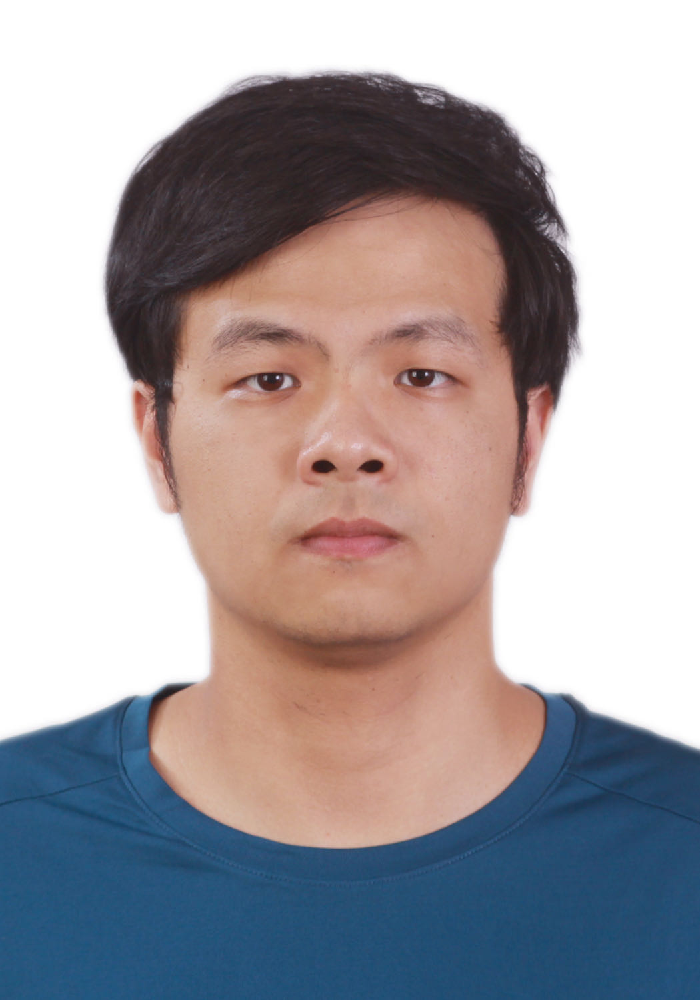
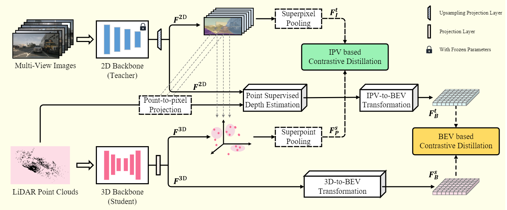

|  |
Jiajun Deng 雷潇涵
PhD Student (grade 1) University of Science and Technology of China (USTC) Email: redemption (at) mail.ustc.edu.cn |
I am a postdoctoral researcher at The University of Adelaide, working with Prof. Ian Reid and Dr. Feras Dayoub. Prior to that, I was a postdoctoral research associate at The University of Sydney, working with Prof. Wanli Ouyang. I obtained both my Ph.D. degree (2021) and Bachelor degree (2016) in University of Science and Technology of China (USTC). My Ph.D. advisors are Prof. Houqiang Li and Prof. Wengang Zhou. I have closely cooperated with Prof. Yanyong Zhang, whom I also regarded as another advisor of mine.
My research interests include computer vision and robotics, and I am currently working on 3D scene understanding and multi-modality understanding.
|

|
Sha Zhang, Jiajun Deng, Lei Bai, Houqiang Li, Wanli Ouyang, Yanyong Zhang
HVDistill: Transferring Knowledge from Images to Point Clouds via Unsupervised Hybrid-View Distillation International Journal of Computer Vision volume (IJCV), 2024. |